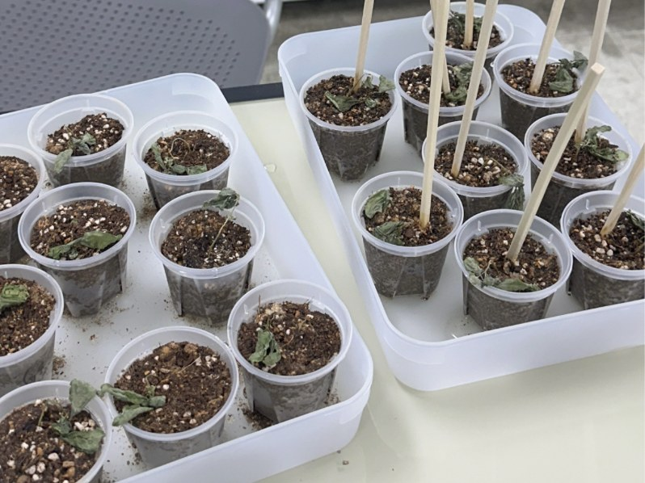
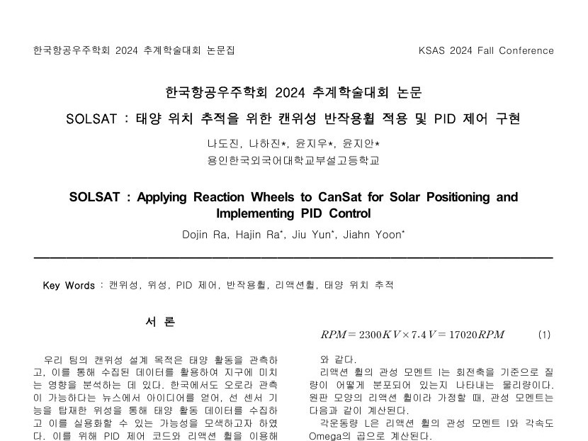
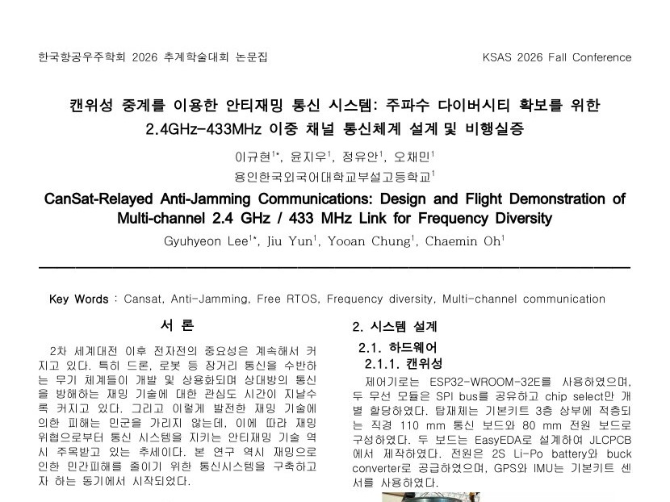
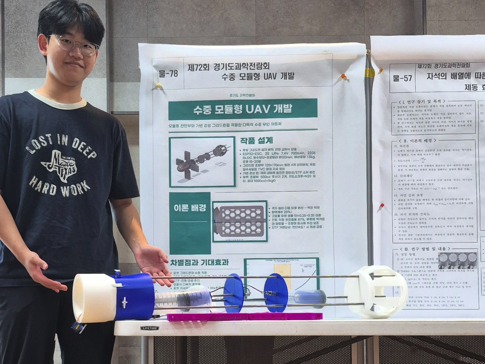

KSEF 2026
Drought priming in basil
A plant science study on how drought priming changes basil's response to later stress. Received an honorable mention at KSEF 2026.
Research
Papers and science fair projects.

KSEF 2026
A plant science study on how drought priming changes basil's response to later stress. Received an honorable mention at KSEF 2026.

Paper, KSAS 2024
A CanSat that turns itself toward the sun with a reaction wheel and PID control, so its sun sensor stays locked on the sun to collect solar activity data.

Paper, KSAS 2026
A two-channel communication system in which a CanSat relays a 2.4 GHz link over 433 MHz, keeping ground stations connected when a jammer blocks 2.4 GHz. The system was proven in flight.

Science exhibition
An underwater vehicle that steers with grid fins and changes its stiffness with a shear-thickening fluid. Entered in the National Science Exhibition.